Juliana Cortez R
Investigadora adjunto del Centro de Soluciones basadas en la Naturaleza
Conservamos paisajes biológicamente diversos en América Latina, en acuerdo con las culturas locales y los gobiernos locales.


Trabajamos en los lugares más biodiversos del planeta.
Colombia es uno de los países con mayor biodiversidad en el mundo. En Colombia, Naturaleza y Cultura Internacional apoya iniciativas de conservación en los Andes, específicamente en las regiones montañosas central y occidental, la región del Chocó y la región del Orinoco.
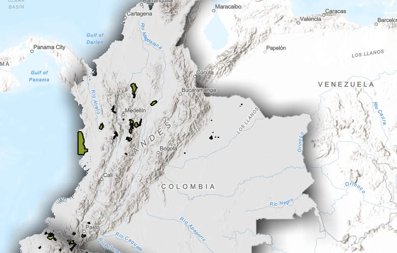
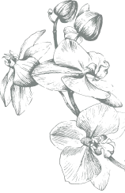
Naturaleza y Cultura Internacional se centra en cinco áreas estratégicas complementarias: clima, paisajes naturales, agua, especies y personas.
En asociación con el Instituto de Investigación de Recursos Biológicos Alexander von Humboldt (Instituto Humboldt), Naturaleza y Cultura identifica y desarrolla nuevas áreas protegidas para asegurar la diversidad biológica y los servicios ecosistémicos.
Nuestro proceso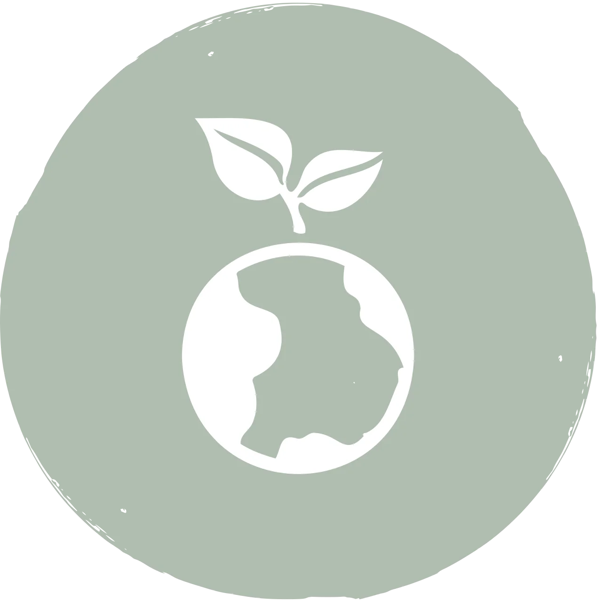

El cambio climático es la mayor amenaza para la vida en nuestro planeta. La deforestación y la degradación de los bosques son una de las principales causas del cambio climático en los trópicos. Naturaleza y Cultura Internacional conserva los bosques y los recursos hídricos que ayudan a las comunidades locales a adaptarse al calentamiento global. Mitigamos el cambio climático al reducir la deforestación y la degradación de los ecosistemas, lo que permite que los bosques capturen y almacenen carbono de la atmósfera.
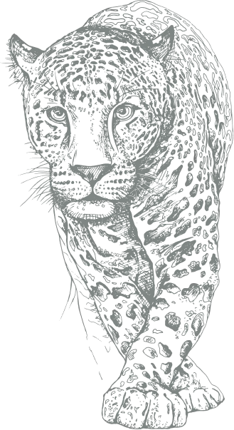
Naturaleza y Cultura Internacional ha ayudado a proteger 800 mil hectáreas en Colombia, protegiendo puntos biodiversos críticos. Calculamos que estos bosques nativos protegidos y otros ecosistemas naturales no forestales, como sabanas y páramos, almacenan alrededor de 72 millones de toneladas de carbono.
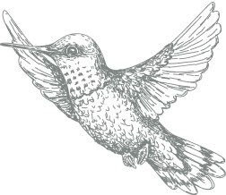
A través de la creación y administración de nuevas áreas protegidas, Naturaleza y Cultura Internacional está trabajando con las autoridades ambientales regionales y otras organizaciones para consolidar dos corredores naturales paralelos en la región del Pacífico colombiano: el Corredor Costero Chocoano de 450 kilómetros y el corredor Alto Andino-Pacífico de 250 kilómetros. Ambos corredores contribuyen a la protección de la biodiversidad y de los valores culturales de las comunidades étnicas afrocolombianas.
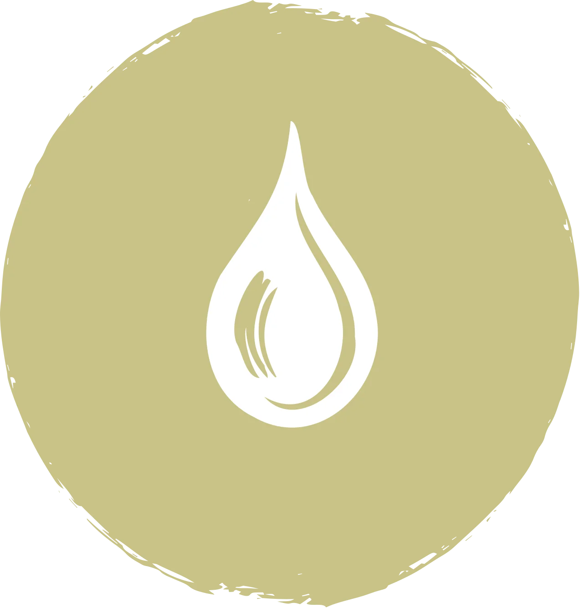
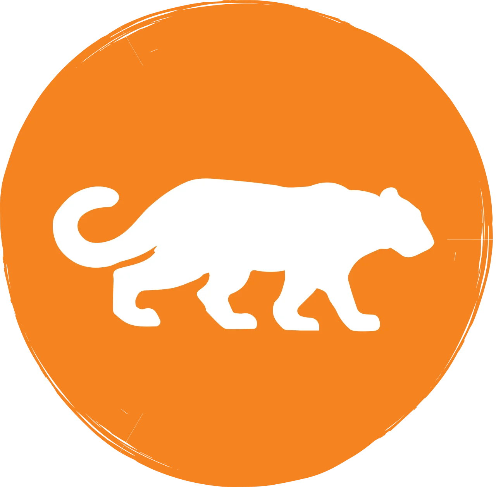
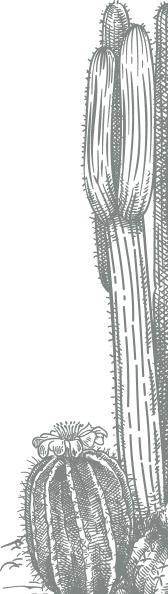
La palma de cera (Ceroxylon quindiuense), es la palma más alta del mundo (hasta 60 metros) y en 1985 fue declarada por el gobierno colombiano como el “árbol nacional”. Sin embargo, está en peligro de extinción. Naturaleza y Cultura busca proteger este árbol y el paisaje que lo rodea, a través de la promoción de su uso sostenible, la investigación sobre esta especie y la creación de reservas privadas y un área protegida pública.
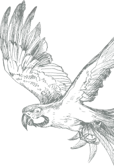

No te pierdas las últimas noticias, historias y eventos de Naturaleza y Cultura en Colombia.
Ver todas las noticias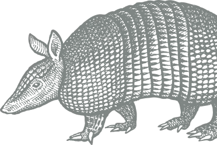

Mantente al día con las últimas publicaciones de Colombia.
Ver todas las publicaciones
Naturaleza y Cultura Internacional trabaja en estrecha colaboración con el Instituto de Investigación de Recursos Biológicos Alexander von Humboldt (Instituto Humboldt) en Colombia, así como con universidades, instituciones públicas y privadas, comunidades y gobiernos locales para proteger paisajes biológica y culturalmente diversos. Nuestros socios son fundamentales para lograr nuestros objetivos de conservación. Creemos que la conservación sólo es posible cuando se trabaja junto con las personas que viven en las comunidades que pretendemos proteger.
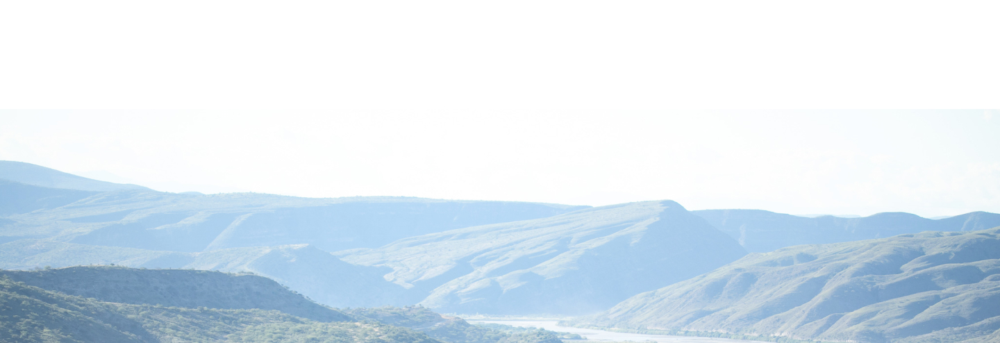
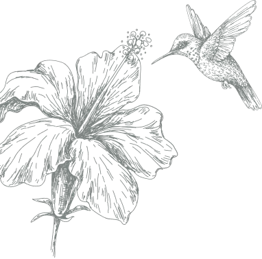

A través del Instituto de Investigación de Recursos Biológicos Alexander von Humboldt (Instituto Humboldt), contamos con expertos especializados en conservación, monitoreo y evaluación, que ayudan a las comunidades, organizaciones y gobiernos locales y nacionales a proteger paisajes biológica y culturalmente diversos.
Investigadora adjunto del Centro de Soluciones basadas en la Naturaleza
Coordinadora de Comunicación para América Latina
nsanchez@naturalezaycultura.orgNaturaleza y Cultura
Internacional
es una
organización
no
gubernamental 501 (c) (e)
EIN: 33-0773524